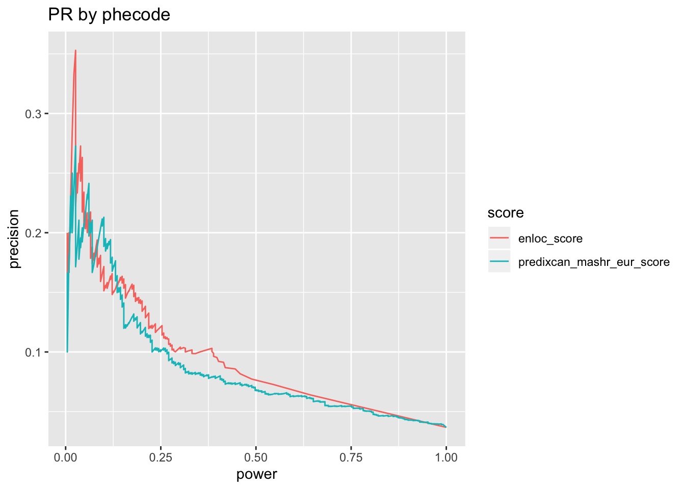
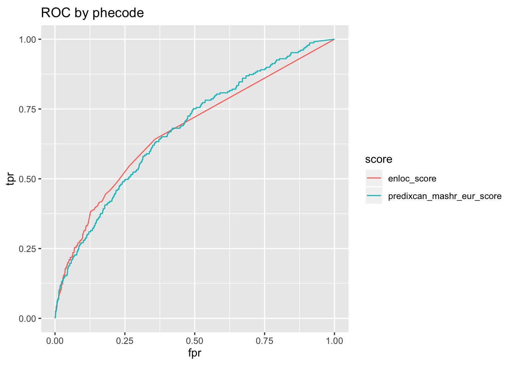
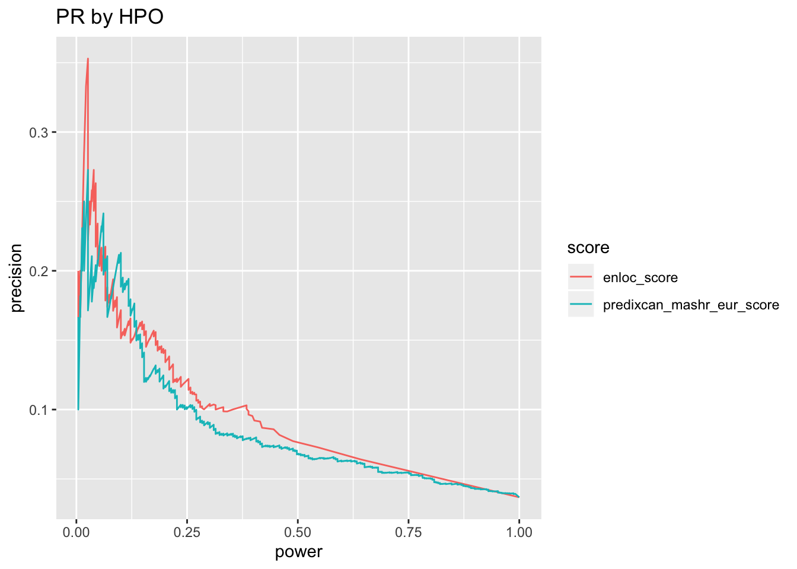
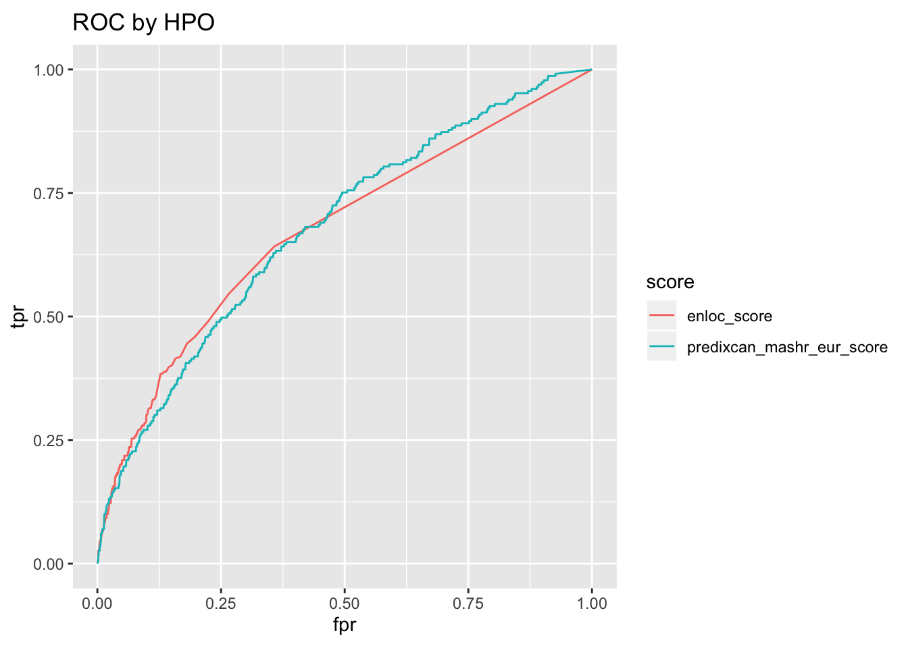

rm(list = ls())
library(ggplot2)
library(dplyr)
library(pander)
panderOptions('table.split.table', Inf)Install prroc
devtools::install_github('liangyy/prroc')## Skipping install of 'prroc' from a github remote, the SHA1 (d24ce98a) has not changed since last install.
## Use `force = TRUE` to force installationlibrary(prroc)Download silver standard here
silver_standard = readRDS('~/Downloads/silver_phecode_to_mim.rds')
# show the silver standard object
silver_standard$script_info## [1] "phecode_to_omim_to_gene.sh"head(silver_standard$table)## gene HPO phecode
## 1 ENSG00000133019 28 751.12
## 2 ENSG00000133019 72 586.4
## 3 ENSG00000133019 126 595
## 4 ENSG00000133019 217 527.7
## 5 ENSG00000133019 767 756.21
## 6 ENSG00000133019 768 756.22Using the one composed for GTEx GWAS paper.
options(stringsAsFactors = F)
library(dplyr)
dat = read.table('https://bitbucket.org/yanyul/rotation-at-imlab/raw/85a3fbe8f08df7c67265fed69569b7ea554d4e12/analysis/fdr_power_specificity/companion_figure_finalized/summary_on_expression_cleanup/logistic-based-test.datamatrix.OMIM-LD-block-PrediXcan-MASH-EUR.tsv', header = T, sep = '\t')
gwas_catelog_to_phecode = read.csv('https://bitbucket.org/yanyul/rotation-at-imlab/raw/85a3fbe8f08df7c67265fed69569b7ea554d4e12/analysis/gold-standard/gwas-catalog-to-phecode.csv')
trait_to_gwas_catalog = read.delim2('https://bitbucket.org/yanyul/rotation-at-imlab/raw/85a3fbe8f08df7c67265fed69569b7ea554d4e12/analysis/gold-standard/trait-to-hpo-and-mim.txt', header = T, sep = '\t')
# obtain mapping between trait and phecode
map_trait_to_phecode = list()
for(i in 1 : nrow(trait_to_gwas_catalog)) {
mapped_traits = trait_to_gwas_catalog$mapped_trait[i]
if(is.na(mapped_traits)) {
next
}
catalog_strings = unique(unlist(strsplit(mapped_traits, ';')))
phecodes = gwas_catelog_to_phecode %>% filter(trait %in% catalog_strings) %>% pull(phecode)
phecodes = unique(phecodes)
phecodes = phecodes[phecodes != '-']
if(length(phecodes) == 0) {
next
}
map_trait_to_phecode[[length(map_trait_to_phecode) + 1]] = data.frame(trait = trait_to_gwas_catalog$trait[i], phecode = phecodes)
}
map_trait_to_phecode = do.call(rbind, map_trait_to_phecode)
# obtain mapping between trait and HPO
map_trait_to_hpo = list()
for(i in 1 : nrow(trait_to_gwas_catalog)) {
hpo_str = trait_to_gwas_catalog$hpo[i]
if(is.na(hpo_str)) {
next
}
hpos = unique(unlist(strsplit(hpo_str, ';')))
if(length(hpos) == 0) {
next
}
map_trait_to_hpo[[length(map_trait_to_hpo) + 1]] = data.frame(trait = trait_to_gwas_catalog$trait[i], HPO = hpos)
}
map_trait_to_hpo = do.call(rbind, map_trait_to_hpo)
score_table = dat %>% select(trait, gene, predixcan_mashr_eur_score, enloc_score) %>% distinct()
map_table = map_trait_to_phecode %>% distinct()
map_table2 = map_trait_to_hpo %>% distinct()score_table %>% head %>% pander| trait | gene | predixcan_mashr_eur_score | enloc_score |
|---|---|---|---|
| UKB_20002_1094_self_reported_deep_venous_thrombosis_dvt | ENSG00000000457 | 2.667 | 0 |
| UKB_20002_1094_self_reported_deep_venous_thrombosis_dvt | ENSG00000000460 | 13.01 | 0 |
| UKB_20002_1094_self_reported_deep_venous_thrombosis_dvt | ENSG00000007908 | 17.75 | 0 |
| UKB_20002_1094_self_reported_deep_venous_thrombosis_dvt | ENSG00000075945 | 4.271 | 0 |
| UKB_20002_1094_self_reported_deep_venous_thrombosis_dvt | ENSG00000117475 | 3.957 | 0 |
| UKB_20002_1094_self_reported_deep_venous_thrombosis_dvt | ENSG00000117477 | 40.43 | 0 |
map_table %>% head %>% pander(caption = 'trait to phecode')| trait | phecode |
|---|---|
| UKB_1200_Sleeplessness_or_insomnia | 327.4 |
| UKB_20002_1094_self_reported_deep_venous_thrombosis_dvt | 452 |
| UKB_20002_1111_self_reported_asthma | 495 |
| UKB_20002_1222_self_reported_type_1_diabetes | 250.1 |
| UKB_20002_1223_self_reported_type_2_diabetes | 250.2 |
| UKB_20002_1223_self_reported_type_2_diabetes | 274.1 |
map_table2 %>% head %>% pander(caption = 'trait to HPO')| trait | HPO |
|---|---|
| UKB_1200_Sleeplessness_or_insomnia | 100785 |
| UKB_20002_1094_self_reported_deep_venous_thrombosis_dvt | 4936 |
| UKB_20002_1094_self_reported_deep_venous_thrombosis_dvt | 1977 |
| UKB_20002_1094_self_reported_deep_venous_thrombosis_dvt | 1907 |
| UKB_20002_1094_self_reported_deep_venous_thrombosis_dvt | 2639 |
| UKB_20002_1094_self_reported_deep_venous_thrombosis_dvt | 30243 |
o = silver_standard_proto(score_table, map_table, silver_standard, trait_code = 'phecode')## Run with silver standard from: phecode_to_omim_to_gene.sh## Map trait by: phecode## Mapper chosen: greedy_map## Extracting all columns of score_table other than "trait" and "gene" as scores## 2 score columns are used## Joining, by = "phecode"o$pr + ggtitle('PR by phecode')
o$roc + ggtitle('ROC by phecode')
o = silver_standard_proto(score_table, map_table2, silver_standard, trait_code = 'HPO')## Run with silver standard from: phecode_to_omim_to_gene.sh## Map trait by: HPO## Mapper chosen: greedy_map## Extracting all columns of score_table other than "trait" and "gene" as scores## 2 score columns are used## Joining, by = "HPO"o$pr + ggtitle('PR by HPO')
o$roc + ggtitle('ROC by HPO')